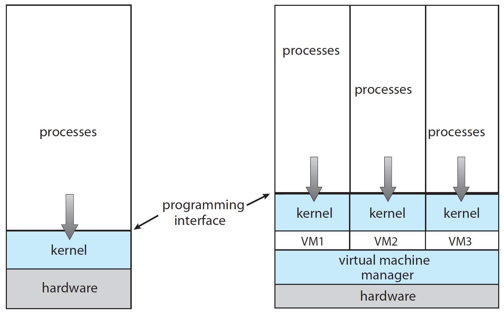

Virtualization
CS422/522 Lecture 15
10 November 2014
Last updated: 10 November 2014
Recap
OSI Model
Independent in theory, not in practice
How do we access www.google.com
Virtualization

Introduction
Looks, feels, behaves, acts like the real thing but is not
Where have we seen this?
Virtual memory, Qemu in labs
Some other examples:
Qemu in our labs
Windows games on Linux and Mac (virtualize DirectX and WinAPI)
Android / iOS simulators (emulators) for app development
The Cloud
Motivation
Complete (machine-level) isolation (security)
Consolidation
Multiple operating systems
Kernel development
Allocate resources at machine level
Application / configuration distribution
Terminology
Application containment -
Separated environment
Simulation -
Mimic a machine
Emulation -
Mimic a machine's interface
Virtualization -
Transparent multiplexing of a machine
Paravirtualization -
Opaque multiplexing of a machine
Requirements for Virtualization
Fidelty
Performance
Safety
Challenges
Not all hardware can be transparently multiplexed
Overheads
Resource fairness
Isolation
x86 Overview
Instructions that violate requirements
Memory
I/O devices
Instructions
Privileged -- user mode trap into kernel
Control sensitive -- change configuration of resources -- pushf, popf, sgdt, sidt, sldt, smsw
Behavior sensitive -- behavior depend on configuration of resources -- pop, push, call, jmp, int n, ret, lar, lsl, verr, verw, mov
Normal instructions
Example: push %cs; pop %eax -- reveals CPL
Trap and Emulate
Execute code as normal
Execute privileged instruction
Triggers trap to hypervisor
Hypervisor handles and returns to user
Example -- system call -- getpid
How to handle sensitive instructions?
Issues?
T-E System Call
Description
CPU
VCPU
int 0x80
U
U
Enter VMM
S
U
VMM sets VM to enter OS
S
S
VMM returns to VM
U
S
VM processes call, returns to process
U
S
Enters VMM
S
S
VMM set VM to return to process
S
U
VMM returns to VM
U
U
What type of system call?
What would an I/O call look like?
Trap and Emulate
Execute code as normal
Execute privileged instruction
Triggers trap to hypervisor
Hypervisor handles and returns to user
Example -- system call -- getpid
How to handle sensitive instructions?
Issues?
T-E Sensitive
Preprocess all code before executing
Place breakpoints before sensitive instructions
Use address breakpoint registers
Issues?
Trap and Emulate
Execute code as normal
Execute privileged instruction
Triggers trap to hypervisor
Hypervisor handles and returns to user
Example -- system call -- getpid
How to handle sensitive instructions?
Issues?
Binary Translation
OS reads binary code to be executed
Identifies sensitive instructions
Replaces with safe calls
Example -- system call -- getpid
Issues?
Also known as dynamic recompilation
x86 Hardware Virtualization
Instantiates different machine states: vmcs (virtual machine control structures): recall task state segment
vmxon / vmxoff -- turn on / off support
vm entry / vm exit -- run / stop a VM
Memory Virtualization
Guest thinks it owns physical memory
Guest cannot use paging mechanisms directly
VMMs utilize shadow (nested) page tables
Shadow Page Tables
VM creates a mapping 0x800000 in guest page
VM accesses 0x800000
Causes a page fault calls into VMM
VMM notices guest page has mapping
Installs new mapping and physicall backs it in shadow
Returns to VM
State of Page Table
PDE and PTE may not even be set
We still get a page fault
When might an application make a valid page fault even if PTE is unset?
Device Virtualization
Default: emulate devices, translate to system calls
Better: paravirtual devices, translate to system calls
Best: Hardware support for virtualization, direct access to hardware
Summary
Anything can be emulated, but performance...
Virtualize core components
For the rest:
Emulate, at a minimum
Translate, if possible
Use hardware multiplexing, when possible
Overview
Virtualization gives us machine-level separation
Overheads for CPU activities not too horrible
Privileged instructions (I/O) occur more overhead
Virtualization is not a perfect method for isolation
Lab 7
Start planning Lab 7
"Optional" -- discuss with me a project
Due Dec 4, NO LATE DAYS
5 min one-on-one demo day -- Dec 5
Next Time
Multiprocessor Scheduling
Wednesday 1:00PM